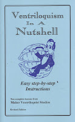

Teaching ventriloquism
6/5/2009
{kind=link}

Good Morning Maher! I am a teacher in Michigan and I have been teaching for the Grant Alternative Ed program for a teacher that had back surgery. I will be here for the rest of February and possibly longer. The reason I am writing is to ask you this: Do you have any resources that I could use (obtain online ... and print) that would help me teach my last hour, "How to do Ventriloquism"? It is a Drama class and I want to introduce them to ventriloquism, puppets, story telling, etc. I ordered your Home Course back..... WAY BACK when I was first married. (1979!!)... and I still have all my little booklets!! Thanks for all you do! Marge
* * * * * *
Marge: Your request is so exciting to me! And encouraging! A teacher of ventriloquism with youth as students. If only there were many more with similar goals - I would be much more optimistic about the future of the art. (But that's another issue for another day.) I suggest the booklet Ventriloquism In A Nutshell as a classroom text. $6.00 for one postpaid, but I do sell them at quantity discount when used for the purpose of teaching the art. The Successful Ventriloquism DVD is another excellent classroom resource. Clinton